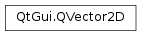

QVector2D¶
Note
This class was introduced in Qt 4.6.
Synopsis¶
Functions¶
- def
__add__(, v2) - def
__div__(, divisor) - def
__div__(, divisor) - def
__eq__(, v2) - def
__iadd__(vector) - def
__idiv__(divisor) - def
__idiv__(vector) - def
__imul__(factor) - def
__imul__(vector) - def
__isub__(vector) - def
__mul__(, factor) - def
__mul__(, v2) - def
__mul__(factor) - def
__ne__(, v2) - def
__reduce__() - def
__repr__() - def
__sub__() - def
__sub__(, v2) - def
distanceToLine(point, direction) - def
distanceToPoint(point) - def
isNull() - def
length() - def
lengthSquared() - def
normalize() - def
normalized() - def
operator[](i) - def
setX(x) - def
setY(y) - def
toPoint() - def
toPointF() - def
toTuple() - def
toVector3D() - def
toVector4D() - def
x() - def
y()
Static functions¶
- def
dotProduct(v1, v2)
Detailed Description¶
The
PySide2.QtGui.QVector2Dclass represents a vector or vertex in 2D space.The
PySide2.QtGui.QVector2Dclass can also be used to represent vertices in 2D space. We therefore do not need to provide a separate vertex class.
-
class
PySide2.QtGui.QVector2D¶ -
class
PySide2.QtGui.QVector2D(point) -
class
PySide2.QtGui.QVector2D(point) -
class
PySide2.QtGui.QVector2D(vector) -
class
PySide2.QtGui.QVector2D(vector) -
class
PySide2.QtGui.QVector2D(xpos, ypos) Parameters: - point –
PySide2.QtCore.QPoint - xpos –
PySide2.QtCore.float - vector –
PySide2.QtGui.QVector3D - ypos –
PySide2.QtCore.float
Constructs a null vector, i.e. with coordinates (0, 0).
Constructs a vector with x and y coordinates from a 2D
point.Constructs a vector with x and y coordinates from a 2D
point.Constructs a vector with x and y coordinates from a 3D
vector. The z coordinate ofvectoris dropped.See also
Constructs a vector with x and y coordinates from a 3D
vector. The z and w coordinates ofvectorare dropped.See also
Constructs a vector with coordinates (
xpos,ypos).- point –
-
PySide2.QtGui.QVector2D.__reduce__()¶ Return type: PyObject
-
PySide2.QtGui.QVector2D.__repr__()¶ Return type: PyObject
-
PySide2.QtGui.QVector2D.distanceToLine(point, direction)¶ Parameters: - point –
PySide2.QtGui.QVector2D - direction –
PySide2.QtGui.QVector2D
Return type: PySide2.QtCore.floatReturns the distance that this vertex is from a line defined by
pointand the unit vectordirection.If
directionis a null vector, then it does not define a line. In that case, the distance frompointto this vertex is returned.- point –
-
PySide2.QtGui.QVector2D.distanceToPoint(point)¶ Parameters: point – PySide2.QtGui.QVector2DReturn type: PySide2.QtCore.floatReturns the distance from this vertex to a point defined by the vertex
point.
-
static
PySide2.QtGui.QVector2D.dotProduct(v1, v2)¶ Parameters: Return type: PySide2.QtCore.floatReturns the dot product of
v1andv2.
-
PySide2.QtGui.QVector2D.isNull()¶ Return type: PySide2.QtCore.boolReturns
trueif the x and y coordinates are set to 0.0, otherwise returnsfalse.
-
PySide2.QtGui.QVector2D.length()¶ Return type: PySide2.QtCore.floatReturns the length of the vector from the origin.
-
PySide2.QtGui.QVector2D.lengthSquared()¶ Return type: PySide2.QtCore.floatReturns the squared length of the vector from the origin. This is equivalent to the dot product of the vector with itself.
-
PySide2.QtGui.QVector2D.normalize()¶ Normalizes the currect vector in place. Nothing happens if this vector is a null vector or the length of the vector is very close to 1.
-
PySide2.QtGui.QVector2D.normalized()¶ Return type: PySide2.QtGui.QVector2DReturns the normalized unit vector form of this vector.
If this vector is null, then a null vector is returned. If the length of the vector is very close to 1, then the vector will be returned as-is. Otherwise the normalized form of the vector of length 1 will be returned.
-
PySide2.QtGui.QVector2D.__ne__(v2)¶ Parameters: v2 – PySide2.QtGui.QVector2DReturn type: PySide2.QtCore.bool
-
PySide2.QtGui.QVector2D.__mul__(factor)¶ Parameters: factor – PySide2.QtCore.floatReturn type: PySide2.QtGui.QVector2D
-
PySide2.QtGui.QVector2D.__mul__(factor) Parameters: factor – PySide2.QtCore.floatReturn type: PySide2.QtGui.QVector2D
-
PySide2.QtGui.QVector2D.__mul__(v2) Parameters: v2 – PySide2.QtGui.QVector2DReturn type: PySide2.QtGui.QVector2D
-
PySide2.QtGui.QVector2D.__imul__(factor)¶ Parameters: factor – PySide2.QtCore.floatReturn type: PySide2.QtGui.QVector2DMultiplies this vector’s coordinates by the given
factor, and returns a reference to this vector.See also
PySide2.QtGui.QVector2D.operator/=()
-
PySide2.QtGui.QVector2D.__imul__(vector) Parameters: vector – PySide2.QtGui.QVector2DReturn type: PySide2.QtGui.QVector2DMultiplies the components of this vector by the corresponding components in
vector.
-
PySide2.QtGui.QVector2D.__add__(v2)¶ Parameters: v2 – PySide2.QtGui.QVector2DReturn type: PySide2.QtGui.QVector2D
-
PySide2.QtGui.QVector2D.__iadd__(vector)¶ Parameters: vector – PySide2.QtGui.QVector2DReturn type: PySide2.QtGui.QVector2DAdds the given
vectorto this vector and returns a reference to this vector.See also
PySide2.QtGui.QVector2D.operator-=()
-
PySide2.QtGui.QVector2D.__sub__(v2)¶ Parameters: v2 – PySide2.QtGui.QVector2DReturn type: PySide2.QtGui.QVector2DThis is an overloaded function.
Returns a
PySide2.QtGui.QVector2Dobject that is formed by changing the sign of the components of the givenvector.Equivalent to
QVector2D(0,0) - vector.
-
PySide2.QtGui.QVector2D.__sub__() Return type: PySide2.QtGui.QVector2D
-
PySide2.QtGui.QVector2D.__isub__(vector)¶ Parameters: vector – PySide2.QtGui.QVector2DReturn type: PySide2.QtGui.QVector2DSubtracts the given
vectorfrom this vector and returns a reference to this vector.See also
PySide2.QtGui.QVector2D.operator+=()
-
PySide2.QtGui.QVector2D.__div__(divisor)¶ Parameters: divisor – PySide2.QtCore.floatReturn type: PySide2.QtGui.QVector2D
-
PySide2.QtGui.QVector2D.__div__(divisor) Parameters: divisor – PySide2.QtGui.QVector2DReturn type: PySide2.QtGui.QVector2D
-
PySide2.QtGui.QVector2D.__idiv__(vector)¶ Parameters: vector – PySide2.QtGui.QVector2DReturn type: PySide2.QtGui.QVector2DDivides the components of this vector by the corresponding components in
vector.See also
PySide2.QtGui.QVector2D.operator*=()
-
PySide2.QtGui.QVector2D.__idiv__(divisor) Parameters: divisor – PySide2.QtCore.floatReturn type: PySide2.QtGui.QVector2DDivides this vector’s coordinates by the given
divisor, and returns a reference to this vector.See also
PySide2.QtGui.QVector2D.operator*=()
-
PySide2.QtGui.QVector2D.__eq__(v2)¶ Parameters: v2 – PySide2.QtGui.QVector2DReturn type: PySide2.QtCore.bool
-
PySide2.QtGui.QVector2D.operator[](i) Parameters: i – PySide2.QtCore.intReturn type: PySide2.QtCore.floatReturns the component of the vector at index position
i.imust be a valid index position in the vector (i.e., 0 <=i< 2).
-
PySide2.QtGui.QVector2D.setX(x)¶ Parameters: x – PySide2.QtCore.floatSets the x coordinate of this point to the given
xcoordinate.
-
PySide2.QtGui.QVector2D.setY(y)¶ Parameters: y – PySide2.QtCore.floatSets the y coordinate of this point to the given
ycoordinate.
-
PySide2.QtGui.QVector2D.toPoint()¶ Return type: PySide2.QtCore.QPointReturns the
PySide2.QtCore.QPointform of this 2D vector.
-
PySide2.QtGui.QVector2D.toPointF()¶ Return type: PySide2.QtCore.QPointFReturns the
PySide2.QtCore.QPointFform of this 2D vector.
-
PySide2.QtGui.QVector2D.toTuple()¶ Return type: PyObject
-
PySide2.QtGui.QVector2D.toVector3D()¶ Return type: PySide2.QtGui.QVector3DReturns the 3D form of this 2D vector, with the z coordinate set to zero.
-
PySide2.QtGui.QVector2D.toVector4D()¶ Return type: PySide2.QtGui.QVector4DReturns the 4D form of this 2D vector, with the z and w coordinates set to zero.
-
PySide2.QtGui.QVector2D.x()¶ Return type: PySide2.QtCore.floatReturns the x coordinate of this point.
-
PySide2.QtGui.QVector2D.y()¶ Return type: PySide2.QtCore.floatReturns the y coordinate of this point.
© 2018 The Qt Company Ltd. Documentation contributions included herein are the copyrights of their respective owners. The documentation provided herein is licensed under the terms of the GNU Free Documentation License version 1.3 as published by the Free Software Foundation. Qt and respective logos are trademarks of The Qt Company Ltd. in Finland and/or other countries worldwide. All other trademarks are property of their respective owners.